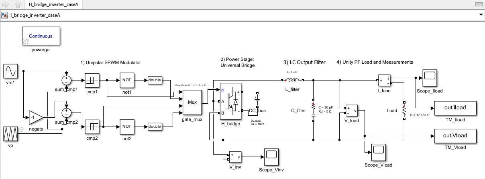
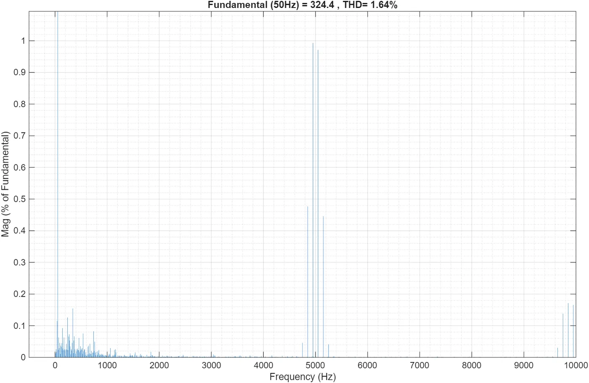
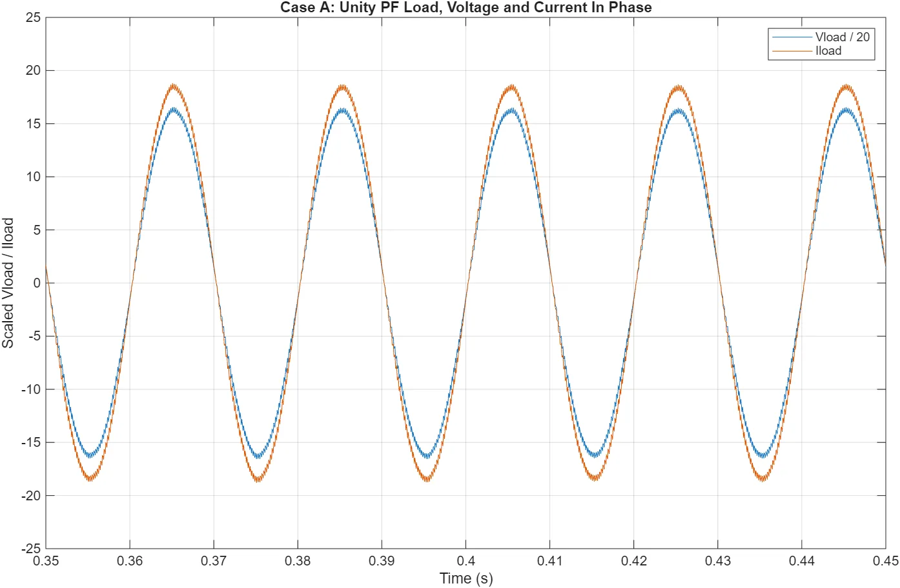
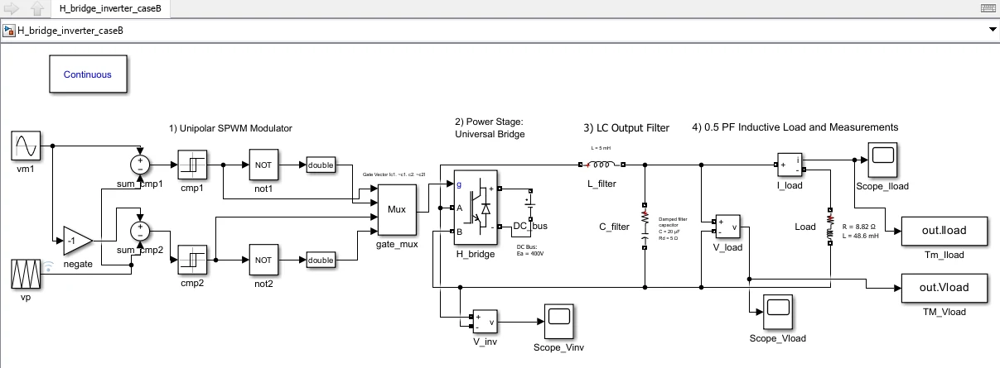
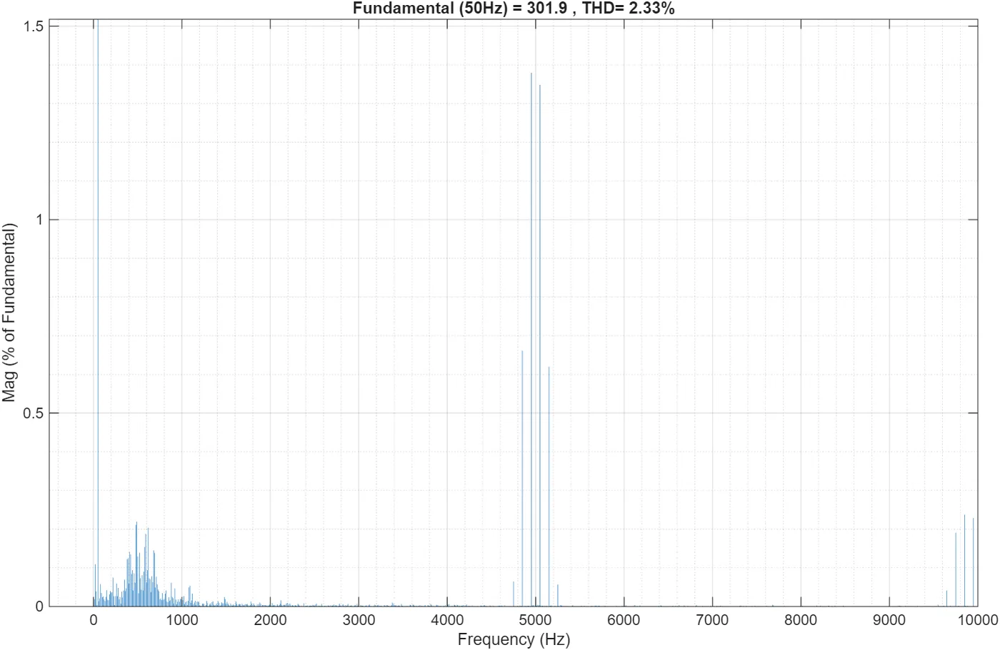
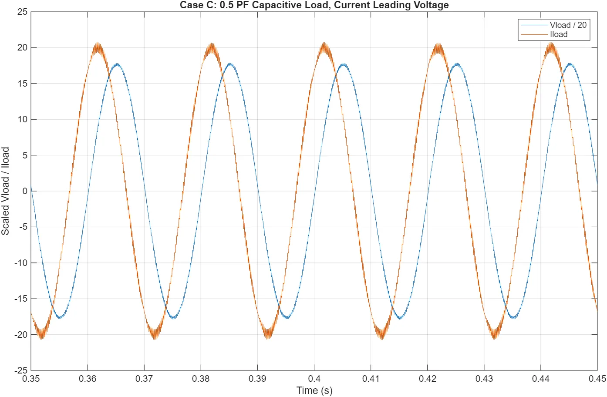
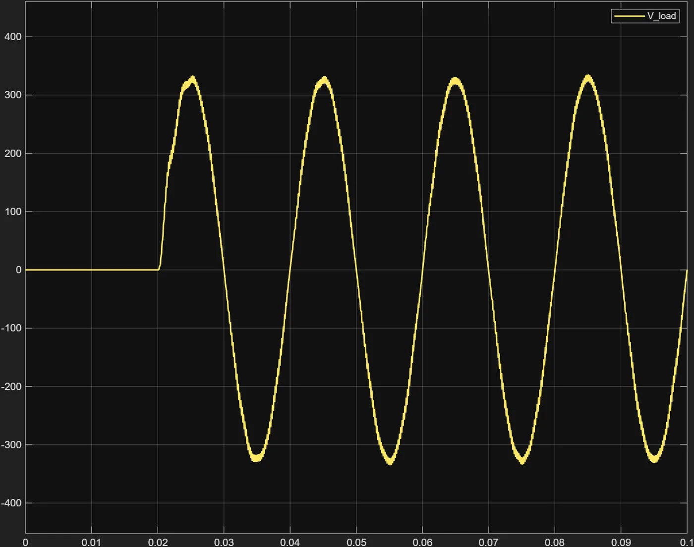
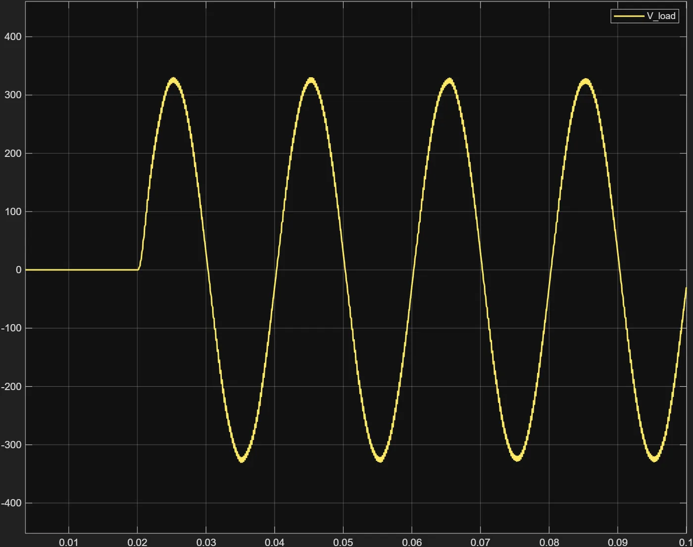

01 · Power electronics
3 kVA Single-Phase H-Bridge Inverter
Take an inverter from a written specification to a validated simulation, and prove the harmonic distortion holds across load power factors rather than only at the easy resistive design point. Five load cases, one parameterised model.

Headline result
1.64 % output voltage THD at full load and unity power factor, against a below-3 % requirement. All three steady-state power factors pass: 1.64 % unity, 2.33 % at 0.5 lagging, 1.22 % at 0.5 leading.
The problem
400 V DC bus in, 230 V RMS at 50 Hz out, unipolar SPWM, open-loop voltage control, total harmonic distortion below 3 % at full load. The binding requirement is the second one: THD has to hold across load power factors, not only at the resistive design point.
What I did
Individual coursework, and I owned all of it: the analytical design, the Simulink implementation, the five validation cases, the FFT and THD analysis, semiconductor selection and the report.
I derived the modulation index from m·Ea = √2 · 230, giving m ≈ 0.8132 on the 400 V bus, which keeps a real margin below the linear SPWM limit of 1. Unipolar modulation was chosen deliberately over bipolar: it pushes the dominant ripple cluster to 2·fp, so at a 5 kHz carrier the energy I have to filter sits near 10 kHz rather than 5 kHz.
I sized a second-order LC output filter from a 10 % current-ripple rule, L = 5 mH and C = 20 µF, putting the corner at ≈ 503 Hz. That is far above the 50 Hz fundamental and far below the ripple cluster, giving roughly -52 dB of second-order attenuation at 10 kHz.
The whole model runs from one parameter script, with powergui in Continuous mode and a variable-step ode23tb solver capped at 2 µs, one hundredth of the carrier period. Then five cases: unity PF, 0.5 inductive, 0.5 capacitive, and step transients at no load and full load.
Case A: the specification check
Pure resistive load at the rated operating point, R = 17.633 Ω. The measured fundamental is 324.4 V peak, or 229.4 V RMS, which is 0.26 % off the 230 V target, at 1.64 % THD. Load current is 18.4 A peak and in phase with the voltage, giving about 2.98 kW. This is the case the specification is written about, and it passes.


Case B: where it failed, and the fix
The 0.5 lagging inductive case, R = 8.82 Ω with L = 48.6 mH, came in at 3.64 % and missed the specification. Diagnosing it took most of the project.
The cause was the LC filter resonating against the load. A resistive load damps that filter; an inductive one does not, so the 503 Hz resonance was free to ring. The tell was in the waveforms: the load current stayed smooth, because the load inductance filters it, while the output voltage rang. That asymmetry is what pointed at the filter rather than the modulator.
I added a 5 Ω damping resistor in series with the filter capacitor, which is also what a real capacitor's ESR contributes. THD fell from 3.64 % to 2.33 %, back inside specification, without touching the chosen L and C.
The fix has a price and I report it: unity-power-factor THD rose from 0.72 % to 1.64 %. I took that trade because a design has to hold across the whole load range, not win at one operating point.


Case C: the opposite problem
The 0.5 leading capacitive case, R = 8.82 Ω with C = 208 µF, gave the best distortion figure of the three at 1.22 %, with current leading voltage by about 60 degrees and a peak near 20 A.
The interesting number is not the THD. The fundamental came out at 352.8 V peak, or 249.5 V RMS, which is 8 % above the target rather than below it. The capacitive load interacts with the filter inductor and raises the output, and an open-loop modulator has no way to pull it back down. Read alongside Case B, which sagged to 213.5 V, the pair brackets the real limitation of open-loop control: the output is a function of the load, and the modulation index cannot know that.

The five cases, side by side
| Case | Load | Fundamental peak | RMS | THD |
|---|---|---|---|---|
| A | R = 17.633 Ω, unity | 324.4 V | 229.4 V | 1.64 % |
| B | R = 8.82 Ω, L = 48.6 mH, 0.5 lagging | 301.9 V | 213.5 V | 2.33 % |
| C | R = 8.82 Ω, C = 208 µF, 0.5 leading | 352.8 V | 249.5 V | 1.22 % |
| D | R = 1 MΩ, no-load step | ≈ 325 to 330 V | not measured | not applicable |
| E | R = 17.633 Ω, full-load step | ≈ 325 to 330 V | not measured | not applicable |
THD is quoted for the steady-state cases only. Cases D and E are transient runs, where an FFT of a non-stationary waveform would not mean anything, so they are read in the time domain instead.
Cases D and E: the step transient
For the transient pair I replaced the fixed modulating amplitude with a stepped one, Vm_step(t)·sin(ωm·t), stepping from zero to nominal at t = 20 ms. Case D runs into an effectively open output, modelled as 1 MΩ so the solver still has a path, drawing about 0.23 mA. Case E runs into the full resistive load.
The output sits at zero until the step, then rises to a steady sinusoid of about 325 to 330 V peak. In Case E the load current reaches roughly 18 to 19 A peak and stays in phase.
What I expected here was a large overshoot at no load and a smooth rise at full load, since the load resistance is the obvious damping path. That is not what happened: the two transients came out similar. The 5 Ω damping resistor added for Case B is doing the work in both, suppressing the LC resonance even with no load connected. The full-load case is still marginally better damped, because the load gives energy a second place to go. A fix aimed at one problem turned out to have solved another, which I would not have found without running the case.


How the model is driven
Every case is reproducible from one parameter script rather than from numbers typed into blocks. Change the spec at the top and the filter, the loads and the solver step all follow.
% Spec Vrms_target = 230; % V fm = 50; % Hz S_max = 3000; % VA THD_target = 0.03; % Inverter choices Ea = 400; m = V_peak/Ea; % ~0.8132 fp = 5000; k = fp/fm; % 100 % Filter L = 5e-3; C = 20e-6; fn_actual = 1/(2*pi*sqrt(L*C)); % ~503 Hz % Loads R_unity = Z_mag; % 17.633 ohm R_ind = Z_mag*0.5; % 8.817 ohm L_load_ind = XL_ind/wm; % 48.6 mH C_load_cap = 1/(wm*XC_cap); % 208 uF % Simulation Tc = Tp/100; % 2 us max solver step tend = 10/fm; % 0.2 s, 10 fundamental periods
Scope and limitations
- Simulation only. No prototype, no PCB, no laboratory measurement. Nothing here was built or measured on hardware.
- No efficiency or thermal figure is published for this project. The report contains a first-order loss and junction-temperature hand calculation, but its switching-energy values are wrong and material loss terms are missing, so the numbers are not reliable even as estimates. The device-feasibility check is described; its numbers are not quoted.
- Open-loop control only. Output RMS is a function of the load: it sags to 213.5 V under inductive loading and rises to 249.5 V under capacitive loading, because a fixed modulation index cannot see either. A practical unit would need closed-loop regulation.
- Ideal-ish device models: no dead-time, no detailed gate-drive or EMI modelling.